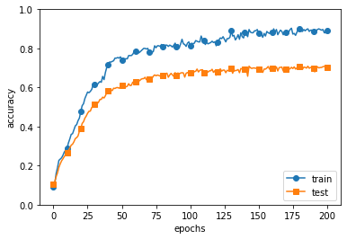

7.2. 4. 正則化¶
過学習が起こるのは
パラメータを大量に持ち、表現力の高いモデルである
訓練データが少ない
[1]:
import sys, os
sys.path.append(os.path.abspath(os.path.join('..', 'sample')))
[2]:
import numpy as np
import matplotlib.pyplot as plt
from dataset.mnist import load_mnist
from common.multi_layer_net import MultiLayerNet
from common.optimizer import SGD
(x_train, t_train), (x_test, t_test) = load_mnist(normalize=True)
# 過学習を再現するために、学習データを削減
x_train = x_train[:300]
t_train = t_train[:300]
# weight decay（荷重減衰）の設定 =======================
#weight_decay_lambda = 0 # weight decayを使用しない場合
weight_decay_lambda = 0.1
# ====================================================
network = MultiLayerNet(input_size=784, hidden_size_list=[100, 100, 100, 100, 100, 100], output_size=10,
weight_decay_lambda=weight_decay_lambda)
optimizer = SGD(lr=0.01)
max_epochs = 201
train_size = x_train.shape[0]
batch_size = 100
train_loss_list = []
train_acc_list = []
test_acc_list = []
iter_per_epoch = max(train_size / batch_size, 1)
epoch_cnt = 0
for i in range(1000000000):
batch_mask = np.random.choice(train_size, batch_size)
x_batch = x_train[batch_mask]
t_batch = t_train[batch_mask]
grads = network.gradient(x_batch, t_batch)
optimizer.update(network.params, grads)
if i % iter_per_epoch == 0:
train_acc = network.accuracy(x_train, t_train)
test_acc = network.accuracy(x_test, t_test)
train_acc_list.append(train_acc)
test_acc_list.append(test_acc)
print("epoch:" + str(epoch_cnt) + ", train acc:" + str(train_acc) + ", test acc:" + str(test_acc))
epoch_cnt += 1
if epoch_cnt >= max_epochs:
break
# 3.グラフの描画==========
markers = {'train': 'o', 'test': 's'}
x = np.arange(max_epochs)
plt.plot(x, train_acc_list, marker='o', label='train', markevery=10)
plt.plot(x, test_acc_list, marker='s', label='test', markevery=10)
plt.xlabel("epochs")
plt.ylabel("accuracy")
plt.ylim(0, 1.0)
plt.legend(loc='lower right')
plt.show()
epoch:0, train acc:0.09333333333333334, test acc:0.1056
epoch:1, train acc:0.10666666666666667, test acc:0.1176
epoch:2, train acc:0.16, test acc:0.1435
epoch:3, train acc:0.19, test acc:0.1634
epoch:4, train acc:0.22666666666666666, test acc:0.1913
epoch:5, train acc:0.23333333333333334, test acc:0.2093
epoch:6, train acc:0.24, test acc:0.2246
epoch:7, train acc:0.25333333333333335, test acc:0.2352
epoch:8, train acc:0.27, test acc:0.2472
epoch:9, train acc:0.28, test acc:0.2553
epoch:10, train acc:0.29, test acc:0.2679
epoch:11, train acc:0.31666666666666665, test acc:0.2784
epoch:12, train acc:0.33666666666666667, test acc:0.2893
epoch:13, train acc:0.36, test acc:0.3046
epoch:14, train acc:0.36333333333333334, test acc:0.3098
epoch:15, train acc:0.38333333333333336, test acc:0.322
epoch:16, train acc:0.4033333333333333, test acc:0.3384
epoch:17, train acc:0.41, test acc:0.3432
epoch:18, train acc:0.43, test acc:0.3521
epoch:19, train acc:0.44333333333333336, test acc:0.3763
epoch:20, train acc:0.4766666666666667, test acc:0.3891
epoch:21, train acc:0.5066666666666667, test acc:0.4154
epoch:22, train acc:0.5166666666666667, test acc:0.4245
epoch:23, train acc:0.5433333333333333, test acc:0.4426
epoch:24, train acc:0.56, test acc:0.4539
epoch:25, train acc:0.5766666666666667, test acc:0.4681
epoch:26, train acc:0.5733333333333334, test acc:0.4782
epoch:27, train acc:0.58, test acc:0.479
epoch:28, train acc:0.59, test acc:0.4971
epoch:29, train acc:0.6133333333333333, test acc:0.5048
epoch:30, train acc:0.6133333333333333, test acc:0.5123
epoch:31, train acc:0.6233333333333333, test acc:0.5178
epoch:32, train acc:0.6133333333333333, test acc:0.5173
epoch:33, train acc:0.6233333333333333, test acc:0.525
epoch:34, train acc:0.63, test acc:0.5387
epoch:35, train acc:0.6266666666666667, test acc:0.5391
epoch:36, train acc:0.6566666666666666, test acc:0.5502
epoch:37, train acc:0.64, test acc:0.5461
epoch:38, train acc:0.6766666666666666, test acc:0.5576
epoch:39, train acc:0.7033333333333334, test acc:0.5734
epoch:40, train acc:0.7166666666666667, test acc:0.5826
epoch:41, train acc:0.73, test acc:0.5899
epoch:42, train acc:0.73, test acc:0.5888
epoch:43, train acc:0.7333333333333333, test acc:0.5837
epoch:44, train acc:0.7366666666666667, test acc:0.5961
epoch:45, train acc:0.75, test acc:0.5948
epoch:46, train acc:0.75, test acc:0.5988
epoch:47, train acc:0.7533333333333333, test acc:0.5995
epoch:48, train acc:0.75, test acc:0.5963
epoch:49, train acc:0.7566666666666667, test acc:0.6032
epoch:50, train acc:0.74, test acc:0.6085
epoch:51, train acc:0.7466666666666667, test acc:0.6066
epoch:52, train acc:0.7466666666666667, test acc:0.6071
epoch:53, train acc:0.7466666666666667, test acc:0.6031
epoch:54, train acc:0.7466666666666667, test acc:0.6062
epoch:55, train acc:0.7633333333333333, test acc:0.6192
epoch:56, train acc:0.7633333333333333, test acc:0.6096
epoch:57, train acc:0.7633333333333333, test acc:0.611
epoch:58, train acc:0.77, test acc:0.6273
epoch:59, train acc:0.7833333333333333, test acc:0.622
epoch:60, train acc:0.7866666666666666, test acc:0.6271
epoch:61, train acc:0.78, test acc:0.6324
epoch:62, train acc:0.7766666666666666, test acc:0.6379
epoch:63, train acc:0.78, test acc:0.6342
epoch:64, train acc:0.7866666666666666, test acc:0.6417
epoch:65, train acc:0.7933333333333333, test acc:0.6449
epoch:66, train acc:0.8, test acc:0.6452
epoch:67, train acc:0.8, test acc:0.6521
epoch:68, train acc:0.7966666666666666, test acc:0.6393
epoch:69, train acc:0.8, test acc:0.6382
epoch:70, train acc:0.78, test acc:0.6444
epoch:71, train acc:0.78, test acc:0.6461
epoch:72, train acc:0.78, test acc:0.6451
epoch:73, train acc:0.7833333333333333, test acc:0.6578
epoch:74, train acc:0.8133333333333334, test acc:0.6643
epoch:75, train acc:0.8033333333333333, test acc:0.6597
epoch:76, train acc:0.8133333333333334, test acc:0.6635
epoch:77, train acc:0.8133333333333334, test acc:0.6614
epoch:78, train acc:0.81, test acc:0.6584
epoch:79, train acc:0.82, test acc:0.657
epoch:80, train acc:0.81, test acc:0.6598
epoch:81, train acc:0.8133333333333334, test acc:0.6648
epoch:82, train acc:0.8166666666666667, test acc:0.6698
epoch:83, train acc:0.8166666666666667, test acc:0.673
epoch:84, train acc:0.81, test acc:0.6522
epoch:85, train acc:0.8166666666666667, test acc:0.6637
epoch:86, train acc:0.8133333333333334, test acc:0.6721
epoch:87, train acc:0.8066666666666666, test acc:0.6643
epoch:88, train acc:0.8166666666666667, test acc:0.6562
epoch:89, train acc:0.8266666666666667, test acc:0.6758
epoch:90, train acc:0.8066666666666666, test acc:0.6624
epoch:91, train acc:0.82, test acc:0.6743
epoch:92, train acc:0.8033333333333333, test acc:0.6687
epoch:93, train acc:0.8233333333333334, test acc:0.6741
epoch:94, train acc:0.8466666666666667, test acc:0.6755
epoch:95, train acc:0.8233333333333334, test acc:0.6743
epoch:96, train acc:0.82, test acc:0.6528
epoch:97, train acc:0.81, test acc:0.6727
epoch:98, train acc:0.8266666666666667, test acc:0.6764
epoch:99, train acc:0.8333333333333334, test acc:0.6712
epoch:100, train acc:0.8133333333333334, test acc:0.6769
epoch:101, train acc:0.8266666666666667, test acc:0.6769
epoch:102, train acc:0.8233333333333334, test acc:0.6692
epoch:103, train acc:0.8266666666666667, test acc:0.6814
epoch:104, train acc:0.84, test acc:0.6827
epoch:105, train acc:0.8366666666666667, test acc:0.6943
epoch:106, train acc:0.8333333333333334, test acc:0.6793
epoch:107, train acc:0.8333333333333334, test acc:0.6873
epoch:108, train acc:0.8633333333333333, test acc:0.6901
epoch:109, train acc:0.8433333333333334, test acc:0.6907
epoch:110, train acc:0.84, test acc:0.6754
epoch:111, train acc:0.82, test acc:0.6733
epoch:112, train acc:0.83, test acc:0.6839
epoch:113, train acc:0.8233333333333334, test acc:0.6786
epoch:114, train acc:0.8266666666666667, test acc:0.6848
epoch:115, train acc:0.83, test acc:0.6854
epoch:116, train acc:0.8366666666666667, test acc:0.6931
epoch:117, train acc:0.83, test acc:0.6771
epoch:118, train acc:0.8333333333333334, test acc:0.6859
epoch:119, train acc:0.8133333333333334, test acc:0.6627
epoch:120, train acc:0.83, test acc:0.6808
epoch:121, train acc:0.8433333333333334, test acc:0.6868
epoch:122, train acc:0.8533333333333334, test acc:0.6952
epoch:123, train acc:0.85, test acc:0.6834
epoch:124, train acc:0.86, test acc:0.6888
epoch:125, train acc:0.8466666666666667, test acc:0.6888
epoch:126, train acc:0.8333333333333334, test acc:0.6753
epoch:127, train acc:0.85, test acc:0.6877
epoch:128, train acc:0.85, test acc:0.6861
epoch:129, train acc:0.8566666666666667, test acc:0.6903
epoch:130, train acc:0.89, test acc:0.6969
epoch:131, train acc:0.8633333333333333, test acc:0.6727
epoch:132, train acc:0.8666666666666667, test acc:0.6894
epoch:133, train acc:0.8433333333333334, test acc:0.6854
epoch:134, train acc:0.8533333333333334, test acc:0.688
epoch:135, train acc:0.87, test acc:0.6916
epoch:136, train acc:0.8466666666666667, test acc:0.6756
epoch:137, train acc:0.88, test acc:0.697
epoch:138, train acc:0.86, test acc:0.6944
epoch:139, train acc:0.8533333333333334, test acc:0.6936
epoch:140, train acc:0.8833333333333333, test acc:0.6931
epoch:141, train acc:0.8733333333333333, test acc:0.6955
epoch:142, train acc:0.86, test acc:0.6574
epoch:143, train acc:0.8966666666666666, test acc:0.7088
epoch:144, train acc:0.8833333333333333, test acc:0.7009
epoch:145, train acc:0.88, test acc:0.6973
epoch:146, train acc:0.88, test acc:0.6999
epoch:147, train acc:0.89, test acc:0.6995
epoch:148, train acc:0.89, test acc:0.6978
epoch:149, train acc:0.8966666666666666, test acc:0.6997
epoch:150, train acc:0.8766666666666667, test acc:0.6923
epoch:151, train acc:0.87, test acc:0.6959
epoch:152, train acc:0.8733333333333333, test acc:0.6889
epoch:153, train acc:0.8566666666666667, test acc:0.6771
epoch:154, train acc:0.8766666666666667, test acc:0.6942
epoch:155, train acc:0.8633333333333333, test acc:0.694
epoch:156, train acc:0.8866666666666667, test acc:0.6994
epoch:157, train acc:0.88, test acc:0.7074
epoch:158, train acc:0.8766666666666667, test acc:0.6934
epoch:159, train acc:0.89, test acc:0.6965
epoch:160, train acc:0.88, test acc:0.6968
epoch:161, train acc:0.9, test acc:0.7069
epoch:162, train acc:0.8833333333333333, test acc:0.691
epoch:163, train acc:0.8966666666666666, test acc:0.7051
epoch:164, train acc:0.87, test acc:0.6845
epoch:165, train acc:0.8833333333333333, test acc:0.7016
epoch:166, train acc:0.8933333333333333, test acc:0.7031
epoch:167, train acc:0.8866666666666667, test acc:0.7043
epoch:168, train acc:0.87, test acc:0.6842
epoch:169, train acc:0.8833333333333333, test acc:0.6896
epoch:170, train acc:0.88, test acc:0.6934
epoch:171, train acc:0.87, test acc:0.6929
epoch:172, train acc:0.8833333333333333, test acc:0.6925
epoch:173, train acc:0.8966666666666666, test acc:0.696
epoch:174, train acc:0.9033333333333333, test acc:0.7032
epoch:175, train acc:0.8733333333333333, test acc:0.6969
epoch:176, train acc:0.8766666666666667, test acc:0.7053
epoch:177, train acc:0.8666666666666667, test acc:0.694
epoch:178, train acc:0.8833333333333333, test acc:0.7007
epoch:179, train acc:0.8966666666666666, test acc:0.7052
epoch:180, train acc:0.9, test acc:0.7059
epoch:181, train acc:0.89, test acc:0.7026
epoch:182, train acc:0.8866666666666667, test acc:0.6923
epoch:183, train acc:0.8966666666666666, test acc:0.704
epoch:184, train acc:0.89, test acc:0.703
epoch:185, train acc:0.8966666666666666, test acc:0.699
epoch:186, train acc:0.9, test acc:0.7086
epoch:187, train acc:0.8866666666666667, test acc:0.6983
epoch:188, train acc:0.8933333333333333, test acc:0.7023
epoch:189, train acc:0.8933333333333333, test acc:0.7025
epoch:190, train acc:0.8866666666666667, test acc:0.6975
epoch:191, train acc:0.8933333333333333, test acc:0.6798
epoch:192, train acc:0.89, test acc:0.6974
epoch:193, train acc:0.8966666666666666, test acc:0.7055
epoch:194, train acc:0.9, test acc:0.7001
epoch:195, train acc:0.8966666666666666, test acc:0.7021
epoch:196, train acc:0.8933333333333333, test acc:0.7025
epoch:197, train acc:0.8966666666666666, test acc:0.7062
epoch:198, train acc:0.88, test acc:0.7079
epoch:199, train acc:0.88, test acc:0.7059
epoch:200, train acc:0.8933333333333333, test acc:0.7025

訓練データはほぼほぼ正解に近いが、テストデータの結果が良くない状態。
7.2.1. Weight decay¶
バカでっかい値
特定のニューロンの重みが大きいとき、そのウェイトを小さくする。 具体的には、ラムダプライムというペナルティを与える。
L2のむる (重みの2乗)を損失関数に与えることで、重みが大きくなるのを抑える。
ノルム = ベクトルの大きさのようなもの。 ノルムを計算することで、重みデータがとれる範囲を制限している
7.2.2. Dropout¶
複雑なニューロンの一部を使わなくする。
計算後にDropout率をかける。例えば出力時。
テスト時はDropoutさせないが、ドロップアウトさせたときと同じスケールになるような計算を入れる。 Dropoutするニューロンはランダムなので、どれがDropoutになるかはわからない。
Dropout率は、だいたい0.3~0.5くらいにすることが多い。 あんまり大きいと、使っていないのと同義になるので大きくすることはない。